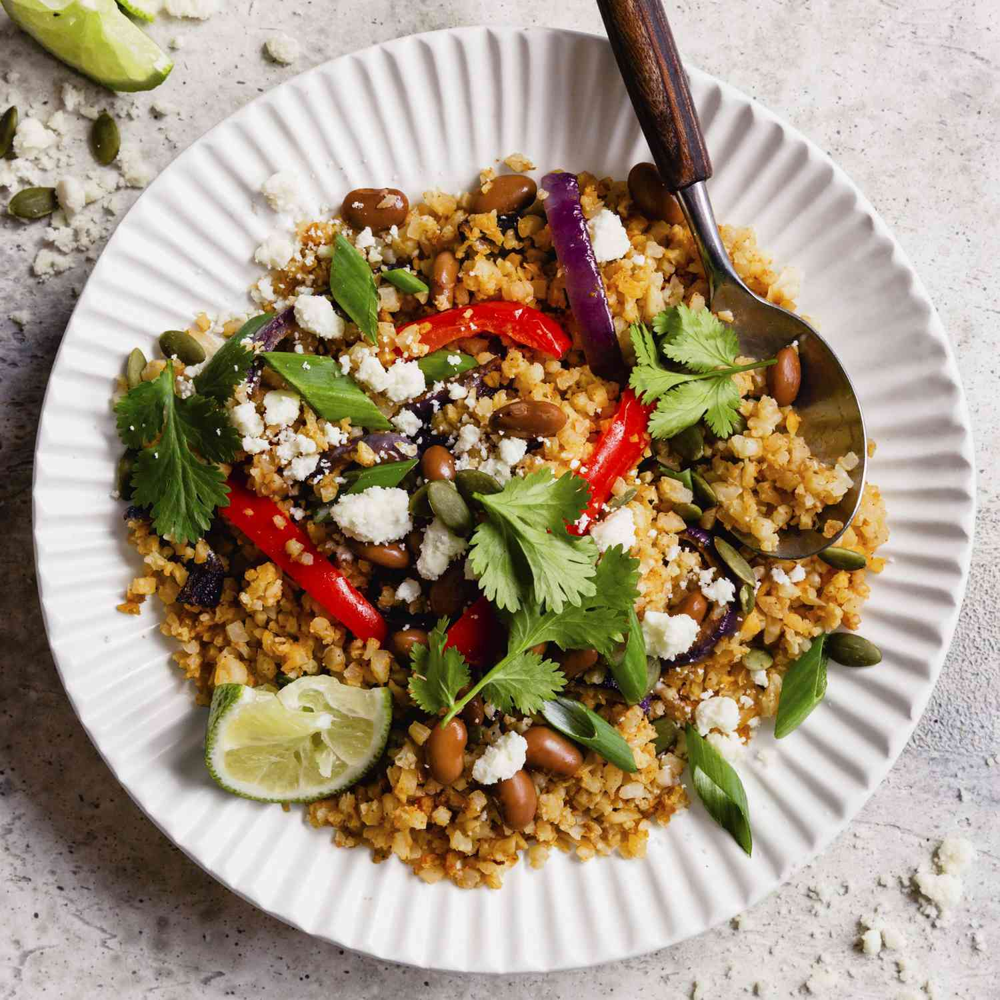

Cauliflower Rice and Beans Fajita Bowls
Homepage

Description
Cauliflower Rice and Beans Fajita Bowls are a healthier, low-carb version of traditional fajitas.
Ingredients
- 2 pounds riced cauliflower.
- 1 red bell peopper, sliced, or more to taste.
- 1 small red onion, halved and sliced.
- 1/4 cup extra-virgin olive oil.
- 4 cloves garlic, grated.
- 1 tablespoons fajita seasoning.
- 2 teaspoons ground cumin.
- 4 ounces crumbled cotija cheese.
- 1 lime, juiced.
Steps
- Preheat the oven to 425 degrees F (220 degrees C). Cover a baking sheet with aluminum foil, ensuring the foil goes up the sides of the sheet to catch all the juices.
- Combine cauliflower, red bell pepper, red onion, olive oil, garlic, fajita seasoning, cumin, and salt in a large bowl; stir until evenly coated. Spread vegetable mixture onto the prepared baking sheet.
- Roast in the preheated oven for 15 minutes; stir and continue roasting until tender and lightly browned, about 15 minutes more.
- Top with pinto beans, cotija cheese, cilantro, pepitas, green onions, and lime juice. Spoon into 4 serving bowls.